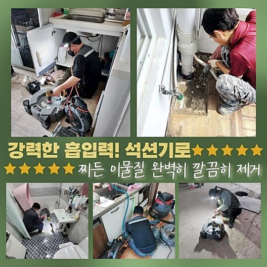
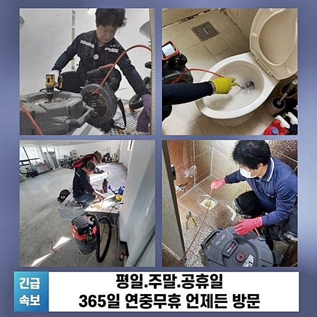
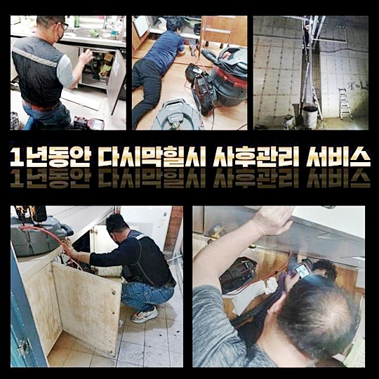
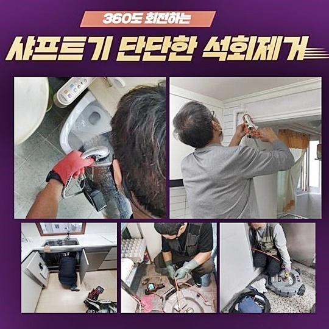
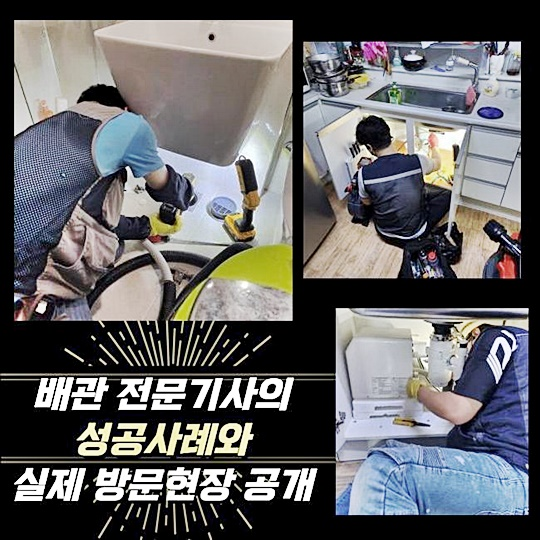
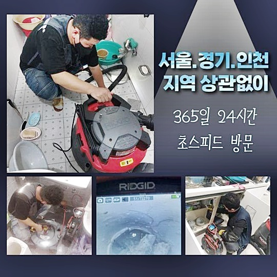
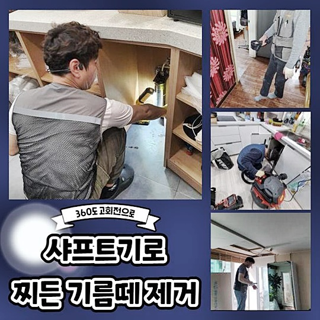

🏠 이천 중리동세탁기배수구막힘 대월면 오수맨홀청소 배관막힘누수
용인 하수구막힘 전문 시공 후기

📋 작업 개요
- 위치: 용인
- 서비스 유형: 하수구막힘, 배관막힘, 맨홀막힘, 누수수리, 역류해결, 배관청소, 고압세척
- 작업 일시: 2024. 9. 20. 10:32
- 업체명: 하수구수사대 (010-5615-2118)
🔍 문제 상황
이천 중리동세탁기배수구막힘 대월면 오수맨홀청소 배관막힘누수
평범한 삶 속에서 하수구 불통이 일어나서 나름 액상 세제를 부어봤으나 그다지 효과가 없어서 막연한 벽에 부딪히시는 고객님을 많이 뵙습니다
막막한 마음이 든다면 다수의 경력을 보유한 전문진에게 지원을 구하는 게 즉각적으로 어려움을 극복하는데 가장 바람직한 방법이 됩니다
그러나 평범한 분들은 공통적으로 누구를 골라야만 현명할지 배경 지식이 없다보니 방향을 잃어버린 느낌이 드는 분도 다수 존재할 것입니다
작업 내역을 정독해 보셔서 유용한 데이터들을 숙지해 두시면 좋을겁니다
얼마 전 찾아뵀었던 하나의 장소는 하수구 막힘으로 수돗물을 열었을 때 이동하지 않고 계속 고여버리는 이상 증세가 일어난 난관을 겪는 모습이었죠
물이 매끄러운 동작으로 방출되지 않고서 되려 지속적으로 머문다면 아마도 배수로의 일부분에 더러운 오염원이 상당수 누적되어 버려서 야기될 가능성이 높은데요
무슨 동기로 막힘이 유발됐는지 분석해주고 보완하는 방향이 재발되지 않게 오류를 마무리 짓는 노선입니다
현장을 빠르게 찾아서 혹시나 노폐물들이 비교적 위에 있는지 봐주기 위해서 하수구 덮개를 오픈해서 쳐다봤는데요
관로에 더러운 오염원이 상당수 끼어 있음을 알아차릴 수 있었네요
관로가 수렴되는 연결부위의 장애로 추정했고 추가적인 확신을 얻기 위해서 배수로 곳곳을 훤하게 중계를 해주는 카메라 기계를 동작시킵니다

🔎 원인 분석
💡 전문가 진단: 정밀 진단 장비를 사용하여 슬러지의 고착 여부를 판명하고 타격/세척 작업을 실시했습니다.
깊숙한 지대까지 내시경 기계를 배치해서 보니 산재한 다수의 오염원과 진흙같은 슬러지가 발견됐죠
험난한 환경 속에서는 혼자 좋다고 소문난 클리너를 종합적으로 접목해도 약간의 물길 트임은 보인다고 치더라도 향후 도로 막혀버릴 겁니다
현재 처한 상황에 따라서 설정하는 작업 기구도 편차가 있는데 강력한 에너지의 고압세척기기를 택하여 처치했습니다
배수로의 곳곳에 찌들어 있는 찌꺼기들을 동시에 없애주는 강력한 업무를 들어가야겠다고 판단했을 만큼 상황이 절박했었습니다
고압수의 기기를 켜서 세척을 출발할 때는 속에서 물이 튈 것이고 특정 위치의 잔재물들이 단숨에 흘러나올테니 여과기나 흡입 장치도 옆에 두었습니다
세월의 흐름을 맞아온 배관이라면 훼손되기가 비교적 쉬우니 상황에 맞는 알맞은 힘으로 세심하게 조정하는 능력도 반드시 있어야만 합니다
정규 청소업무가 부드럽게 종료 수순을 밟는다면 확실한 확증을 얻으려고 내시경 기기로 한번 더 재검토를 실시하면서 완벽히 처리됐나 사감처럼 깐깐하게 봐요
끝났다고 서둘러 마무리하지 않고 미완성된 지점이 없는 지 끊임없이 확인을 거듭하니 같은 증상이 유발되지 않아요
오후작업으로는 별도의 장소의 수로의 복원을 일궈내기 위하여 접수 시에 알려주셨던 작업장으로 향했습니다
이렇다 할 고장없이 쓰던 하수관계가 고장이 나는 바람에 연이어 하수 역류까지도 동반된다고 하셨습니다
흔한 주택 형태라면 여러 세대들이 모여 살면서 배출되어온 이물질과 혼탁한 물이 뒤섞여서 기능 저하를 불러옵니다
원활한 물길을 만들기 위해 부패된 오염물질이 분명히 위치해 있을 내부의 환경을 진단합니다

🔧 작업 과정
관측용도의 내시경으로 검토하니 옥외로 이어지는 연결라인이 말썽이라는 사실을 알아차리게 되었는데요
배관의 본디 형상이 다소 휘어있었고 다수의 장소에서 오는 파이프와 연결된 이음새가 다수인 것도 특성이었어요
정확한 배관의 형태를 고려하지 못하고 일에 착수하면 예기치 않게 출현하는 특이점을 감당하지 못할 수 있어요
소홀히 점검하면 일만 커지고 완치가 어려울 수 있으니 초기 진단을 할 때 각별히 신경을 쓴답니다
원인 확증을 얻으려고 구체적으로 탐색했고 이음새에 고착화되어있는
배관과 한몸처럼 달라붙은 슬러지는 응축된 물줄기를 분사해서 스케일링을 돕는다면 순조롭게 넘어가겠다 싶었죠
무작위로 발사하지 않고 제일 처음은 배수로 경로를 온전히 체득하고 하수도의 출구로 향하여 보이는 이물질부터 퇴치해야 할 것입니다
바깥으로 나가는 통로와 기점에 가까운 특정 구간이 문제성 부위였던 만큼 여기를 타격하여 내부를 말끔히 정돈했죠
바깥으로 가는 관로는 설비에 대한 이해도를 확보하지 못한 사람이 담당하면 처리가 곤란한데 충분한 성공 경력이 있으며 작업허가까지 받으니 걱정하실 필요가 없습니다
앞서 정한 방향에 맞게 관로의 위생을 관리하고 안쪽에 있는 이물 제거를 위해 고압수로 씻는 작동 준비를 해둡니다
고압수를 쏘는 방식을 말하자면 에너지를 가진 물줄기로 붙어있는 오물을 남김 없이 씻어내려주기 떄문에 올바르게 내외부 하수도 기능 회복을 이루도록 보조해 줍니다
적용 범주를 할당하고 물 호스를 장착하여 예정한 위치에 배치하고 떨어질 낌새가 없어보이던 기름 덩어리를 타격해서 순차적으로 없애 나갔습니다
발포하는 도중에도 카메라로 찍힌 스크린을 곧바로 알아보며 정도를 판가름해 주었습니다
안을 말끔히 씻어주고 마감에 들어갈지 봤더니 시원찮은 곳이 없어서 보완이 잘 매듭 지어졌다는 생각이 들었습니다
청소 후의 사후 관리도 못지 않게 중요하므로 사용법에 대한 점도 안내드렸고 동일한 문제가 발생하면 처리해드린다고 안심시켜 드렸어요
하수도에 제한이 생긴다면 가장 빠른 일정을 잡아서 내방하여 수습해 드리며 세척하고 나서 개선을 느끼지 못하셨다면 완전히 시공비를 요구하지 않습니다
하수구 시설의 고장은 여러 사유로 촉발되며 작업지마다 환경적 요인들이 다르므로 대처법도 상이합니다
별의 별 종류의 막힘들을 관리하고 대응해 왔고 상황별로 올바른 매뉴얼이 존재하니 물 흐르듯 진행됩니다!
하수구의 모양새나 규격은 당연하고 노후화된 수준 등 모든 것을 고려한 후 최적의 방향을 택하게 됩니다


✅ 작업 완료
막힘을 유발했던 특정 원인을 확정 짓고 나서 작업을 진행해야만 거대한 하자 발생을 막을 수 있어요
하수관 막힘 현상은 평상시 괜찮았다고 해도 갑자기 찾아오는 불청객이에요
하지만 물이 천천히 내려가거나 냄새가 나는 등의 전조증상이 반드시 있습니다
욕실이나 주방에서 물을 쓰다가 조짐이 보일때 곧바로 접수를 넣어주시면 우려했던 것보다 훨씬 빠르게 해결을 해드릴 수 있습니다
언제라도 상담은 환영이므로 문제점을 알려주신다면 준비를 철저히해서 가겠습니다




⚠️ 베란다 누수 및 방수 관리 방법
- ✅ 비가 많이 올 때 창틀 주변이나 아래층 천장에 얼룩이 생기는지 정기적으로 확인해 보세요.
- ✅ 우수관 주변 실리콘 마감이 들뜨거나 깨진 틈새가 있는지 손상 여부를 수시로 체크하세요.
- ✅ 베란다 바닥 타일의 줄눈(메지)이 소실되면 그 틈으로 물이 침투하여 누수가 유발됩니다.
- ✅ 누수 의심 증상 발견 시 방치하면 아래층 손실이 커지므로 즉시 전문가의 진단을 받으십시오.
💡 핵심 정리
- 확실한 장비 작업(내시경 점검 및 샤프트 스케일링)으로 원인을 뿌리 뽑습니다.
- 작업 후 1년 이내에 동일한 부위 재발 시 100% 무상 A/S 서비스를 보장합니다.
- 서울 · 경기 · 인천 전 지역에 24시간 언제든 긴급 출동할 수 있도록 항시 대기 중입니다.
❓ 자주 묻는 질문 (FAQ)
🚨 용인 하수구막힘 문제로 고민이신가요?
정확한 원인 진단과 확실한 시공으로 재발 없는 해결을 약속드립니다.
24시간 긴급 출동 | 서울 · 경기 · 인천 전지역 | 1년 내 재발 시 무상 A/S